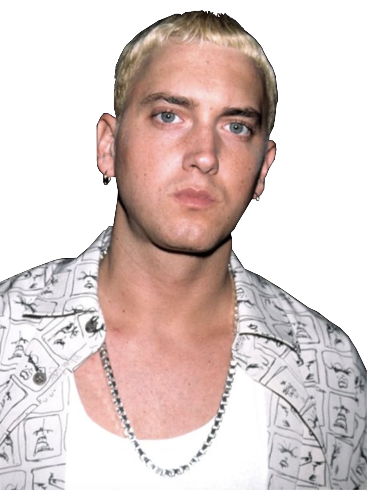

Marshall Mathers
O lado pessoal e vulnerável, foi esta a personalidade que passou pelos traumas, abandonos e violência na sua vida, esta é a parte dele que cuida e protege as suas filhas.
PESSOA · CULTURA · COMUNIDADE
A história de Eminem: de uma infância difícil à influência global no hip-hop.
Explorar apresentação01 / QUEM É

Marshall nasceu a 17/10/1972 tendo 53 anos hoje em dia, nasceu em Detroit, Estados Unidos da América, tem 1,73m de altura com olhos de cor azul-claro, cabelo naturalmente castanho e com o estilo de hip-hop, uso frequente de bonés, hoodies, calças largas e uns ténis desportivos. Hoje em dia é rapper, compositor, produtor musical e ator americano. Ele é pai de três filhas, Hailie Jade Mathers que é a sua única filha biológica, Alaina Marie Scott e Stevie Laine Mathers que foram ambas adotadas por ele.
02 / RECONHECIDO NO MUNDO DA MÚSICA
Conhecido mundialmente como Eminem, Marshall tornou-se uma das figuras mais reconhecidas do rap, sendo icónico pela sua velocidade no rap, esse talento é apresentado em músicas como "Rap God" que em 6 minutos tinha 1.560 palavras. A sua história reúne dificuldades pessoais, económicas e escolares, ambição artística e uma influência importante na cultura hip-hop.
03 / ORIGENS
O famoso rapper cresceu sozinho com a mãe em contexto de pobreza e instabilidade. Na escola, enfrentou bullying severo que uma vez deixou-o em coma no hospital por 10 dias, esta foi uma das razões que o levou a reprovar várias vezes e no final da adolescência desistiu completamente da escola. Na sua adolescência obteve uma cópia do albúm Licensed to III do grupo Beastie Boys e foi a partir daí que se passou a interessar pelo hip-hop, fazendo raps amadores aos 14 anos sob o nome de M&M, em 1997, Los Angeles o rapper Dr. Dre recebeu uma cassete de demonstração do albúm The Slim Shady EP e quando ouviu a cassete quis logo conhece-lo e, a partir de 1999 no lançamento oficial do álbum, a carreira de Eminem cresceu exponencialmente, ao longo do tempo foi quebrando barreiras raciais ligadas ao hip-hop por ser um estilo de música maioritariamente ligado à cultura afro-americana demonstrando que no mundo da música não tem lugar para ideias raciais.
Lançamento de The Slim Shady LP e crescimento da sua popularidade.
Canções marcantes como The Real Slim Shady, Without Me, Mockingbird e Rap God.
O documento destaca o seu processo de reabilitação e a sobriedade alcançada em 2008.
04 / IDENTIDADE ARTÍSTICA
A cabeça do cantor é dividida em três personalidades diferentes, tendo cada uma maneiras diferentes de pensar, tendo passado por experiências diferentes e seguindo papeís diferentes na vida dele.
O lado pessoal e vulnerável, foi esta a personalidade que passou pelos traumas, abandonos e violência na sua vida, esta é a parte dele que cuida e protege as suas filhas.
O artista dedicado ao trabalho, este é o lado talentoso do cantor e o compositor das músicas, foi a sua obceção, perfeição e talento que o levou a ser aceitado no mundo do hip-hop.
O Slim Shady é o alter ego, provocador, sarcástico e rebelde, é ele quem projeta a raiva, frustações e pensamentos mais sombrios através do humor negro e sátiras violentas.
Estas três personalidades formam todas a mesma pessoa, no final do dia elas partilham todas o mesmo corpo e a mesma mente mesmo que pensem de maneiras diferentes porque são todas partes diferentes com objetivos diferentes, mas mesmo com essas diferenças ele trabalham todos juntos para fazer aquilo que mais gostam, fazer Rap.
05 / CULTURA E COMUNIDADE
Através do Slim Shady ele utiliza o humor negro e a violência verbal para criticar a política com duras críticas ao antigo presidente dos Estados Unidos, George W. Bush nas músicas "Mosh" e "Square Dance" em que critica a guerra no Iraque e a paranoia pós 11 de Setembro, essa paranoia até o levou a ser investigado pelo serviço secreto dos Estados Unidos por ter um verso na sua música "We As Americans": "I'd rather see the president dead"; critica a religião que é mais direcionada para religiosos ultraconservadores que o veem como demónio, ele satiriza isso na sua música recente "Lucifer" do álbum The Death of Slim Shady, ele não é muito violento com este assunto porque ele mesmo é cristão; também critica a classe alta americana expondo as injustiças de viver na classe baixa em situações de pobreza ao contrário da classe alta que vive na sua bolha, ele demonstra isso na música como "Rock Bottom" que mostra depressão, pobreza extrema e vulnerabilidade crua.
06 / IMPACTO SOCIAL
Marshall sofreu muito na sua infância, por isso ele angaria dinheiro para que crianças que passam por dificuldades como ele antes passou tenham uma oportunidade de serem melhores na sua vida.
O rapper tem a propria instituição virada para ajudar pessoas a passar por dificuldades como ele na sua infância por isso a principal missão da instituição é o apoio a jovens em risco em que ele financia instituições independentes como Horatio Williams Foundation e Life Ties para esse mesmo propósito
Durante a crise do COVID-19, ele doou centenas de refeições aos profissionais de saúde dos hospitais de Detroit.
Eminem participou ativamente numa campanha de matching grant em que desafiou os fãs a doarem os fundos para os abrigos de emergência locais e duplicou cada dólar arrecadado com o seu próprio dinheiro
07 / O LEGADO
Eminem mudou para sempre o hip-hop, elevando a complexidade das rimas a um nível técnico que nunca se tinha visto antes e conseguindo a aceitação que sempre procurou a vida inteira pela comunidade afro-americana de Detroit sendo respeitado por pioneiros da comunidade.
Antes o rap era sobre crime e poder nos bairros mas Eminem mudou isso trazendo as suas fraquezas, ansiedades e depressão o que artistas atuais pegaram e utilizam nas suas músicas, artistas como Juice WRLD, Lil Peep, Mac Miller e XXXTentacion.
A sua história é apresentada como um exemplo de persistência: apesar dos obstáculos, continuou a desenvolver o seu trabalho até ser reconhecido por figuras importantes da indústria, incluindo Dr. Dre.
CONCLUSÃO
Estudar Eminem é observar como uma experiência pessoal pode influenciar a arte, desafiar convenções e marcar uma comunidade. A mensagem central desta apresentação é não desistir dos objetivos e continuar a trabalhar para os alcançar.
Voltar ao início ↑